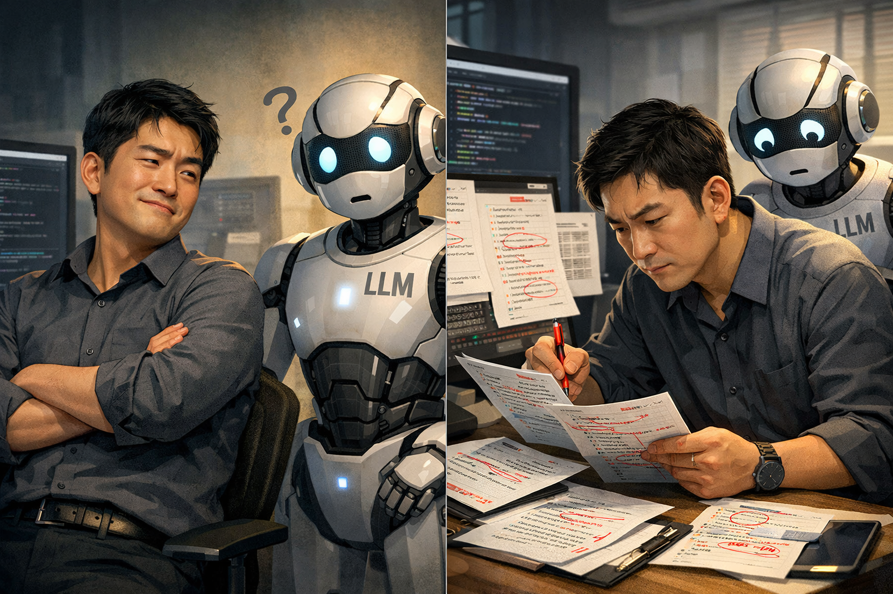

Claude Code는 대부분의 작업을 능숙하게 처리하지만, 솔직히 평가하자면 슬쩍슬쩍 실수를 자주 하는 편입니다. 예를 들어, 한 번은 Qwen모델을 사용하여 다양한 답안을 생성하라고 했더니 몇 시간째 작업이 끝나지 않았고, 확인해 보니 batch size 1로 루프를 돌고 있었습니다. 웃픈 점은 이걸 고치라고 하면 또 금방 스스로 잘 고친다는 것입니다. 즉, 자기도 할 줄은 아는데도 (가이드 없이는) 스스로 하지는 않더라고요.
엄밀하게 따지자면 제가 prompt를 ambiguous하게 제공했으니, 제 잘못이죠. 그런데 그렇게 이해하려다가도, 결국 다시 의문이 들었습니다. 그럼 내가 하나하나 세세하게 prompt로 짜줘야 하나? 아니면 generate된 코드를 내가 전부 검수해야 하나? 그럴 거면 내가 왜 Claude를 쓰지?
Scalable Managing
NAVER와 MIT에서 인턴들을 지도할 때도 정확히 비슷한 고민을 했다는 사실이 떠올랐습니다. 완전 Junior 시절에는 제 일을 제가 직접 했고, 그때는 Claude 같은 도구도 없었으니, 제가 작성한 코드와 제가 하고 있는 일을 low-level까지 모두 이해하고 있었습니다. 하지만 인턴들과 함께 일하기 시작하면서, 그분들이 작성한 코드를 내가 하나하나 다 봐줄 수는 없다는 사실을 받아들여야 했습니다. 물론 가능은 했죠. 하지만 그것은 scalable한 협업 방식이 아니었습니다. 그렇다고 인턴의 결과물을 완전히 신뢰하는 것도 장기적으로는 좋은 방법이 아니란 것도 곧 배우게 되었습니다.
그 과정에서 자연스럽게 익힌 지도 방법은: 가져온 결과물에 대해 counterfactual한 질문을 던지는 것이었습니다. A 시나리오에서는 어땠는지, B에서는 어떤 결과가 나왔는지, C에서는 또 어떻게 달라지는지를 좀 더 구체적으로 묻는 방식이죠. 사실 이런 질문들에 대해서는 이미 어느 정도 답을 짐작하고 있는 경우가 많았습니다. 솔직히 말하면 결과 자체가 궁금했다기보다는, 내가 생각한 방식대로 작업했다면 나올 것이라고 예상되는 결과들이 실제로도 그렇게 나오는지를 확인하는 과정에 가까웠습니다.
Claude에게 일을 시킬 때도 최소한 내가 그 일의 결과가 대략 어떤 모양이어야 하는지를 알고 있으면, Claude의 output을 사용하는 데 대한 reliability가 크게 올라간다는 점을 깨달았습니다. 세부적인 결과까지 완전히 예상과 같을 필요는 없습니다. 하지만 말도 안 되는 결과가 나오면, 무언가가 틀렸다는 강한 signal로 받아들이는 거죠.1
Stochastic Blackbox
(아직은) LLM agent를 Stochastic Blackbox Tool로 봐야 한다고 생각합니다.2 생산성을 높이기 위해 Claude를 쓰는 것이기 때문에, Claude가 적어 준 코드를 한 줄 한 줄 읽는 것은 그 의미가 퇴색됩니다. (사실 읽는다 해도 제대로 버그를 찾아낼 자신도 없습니다.) 그렇다면 차라리 LLM agent를 blackbox로 생각하고, 이 결과물의 reliability를 어떻게 검증하고 보장할 것인지 고민하는 편이 더 효율적이지 않을까요?
사실 이런 전략 자체가 완전히 새로운 것은 아닌 것 같습니다. 제가 Instagram Ad Ranking 팀에서 일하던 방식이 정확히 그랬습니다. 엔지니어들은 모델을 만들고, 회사는 statistically reliable한 evaluation tool을 설계해 제공합니다. 엔지니어는 internal testing을 마친 모델을 최종 evaluation tool에 넣고 score를 받습니다. 그리고 그 score가 곧 그 모델의 reliability를 대변합니다. Evaluation tool이 엔지니어들의 코드를 읽지 않죠.
Agent가 뛰어놀 수 있는 세상을 만들어주기
좋은 evaluation protocol을 설계하는 일은 분명 시간이 많이 듭니다. 하지만 한 번 제대로 만들어두면, 그 이후에는 agent에게 맡길 수 있는 일의 범위를 훨씬 더 scalable하게 넓힐 수 있습니다. 그래서 결국에 느끼게 된 것은:
prompt를 잘 쓰는 것도 중요하지만, 그보다 먼저 “내가 풀고 싶은 문제가 정확히 무엇인지”, “잘 풀렸을 때 어떤 결과가 나와야 하는지”를 설계하는 데 더 많은 시간과 노력을 써야 한다는 점이었습니다.
또 하나 점점 더 강하게 느끼는 건, 최종 결과만 보는 것으로는 부족하다는 것입니다. intermediate result까지 함께 확인해야 합니다. 마치 RL에서 sparse reward보다 dense reward가 학습에 더 유리한 것처럼, Claude 같은 agent에게도 더 촘촘한 evaluation signal이 필요하다는 생각이 듭니다.
어쩌면 Claude Code를 쓴다는 건, 내가 직접 agent를 RL시키는 일과 꽤 비슷한지도 모르겠습니다. 내가 해야 할 일은 agent가 뛰어놀 수 있는 (constrained) 환경을 설계하고, 그 안에서 작동할 reward model을 정의하고 계속 수정해 나가는 과정이 아닐까요?
여담
회사/학교에서 매니저/PI와 일하다 보면, 가끔은 “왜 이렇게까지 의심을 하지?” 싶은 순간들이 있습니다. 어떤 결과를 가져가도 일단 한 번은 의심부터 하시죠. 성능이 기대 이상으로 잘 나오면 “오, 좋다!”보다는 “이거 뭔가 잘못된 거 아니야?”라는 반응이 먼저 나옵니다.
흥미로운 점은, 일잘러(일을 잘하는 사람)들은 이러한 질문들을 이미 예상하고 대비해 둔다는 것입니다. 중간 결과는 어떠했는지, 특정 조건에서는 어떤 양상이 나타났는지, 예외적인 상황에서는 어떻게 동작하는지와 같은 질문에 대해, “이미 모두 검토해 보았다”고 자연스럽게 답할 수 있는 상태를 만들어 둡니다. 단순히 최종 결과만을 제시하는 것이 아니라, 그 결과에 이르기까지의 과정과 다양한 가능성을 함께 점검해 둔 것입니다.
더 나아가, 이러한 사람들은 매니저의 즉각적인 질문에도 유연하게 대응할 수 있도록 코드와 실험 환경을 설계해 둡니다. 필요하다면 추가적인 분석이나 검증을 빠르게 수행할 수 있는 구조를 갖추고 있기 때문에, 평가 과정 자체를 훨씬 신속하고 효율적으로 진행할 수 있습니다. 결국 이는 단순한 준비성을 넘어, 결과에 대한 책임감과 신뢰를 스스로 확보하려는 태도에서 비롯된 것이 아닐까 싶습니다.
한국에는 ‘개떡같이 말해도 찰떡같이 알아듣는다’라는 속담이 있습니다.3 마찬가지로 지난 posting에서 언급한 것처럼, 사람들도 더 이상 “모르겠습니다!”만 반복하는 i-don’t-know bot을 좋아하지 않습니다. 우리는 모델이 단지 uncertainty를 잘 표현하는 것을 넘어, 나의 질문을 이해하고, 심지어 한 번도 본 적 없는 상황에서도 reliable한 decision을 내려주기를 원합니다.
Claude Code가 아직은 ‘일잘러’의 단계에 오르지는 않은 것 같아서, 어느 정도는 의심하며 사용할 필요가 있습니다. 그렇다고 해서 코드를 줄 단위로 검열하듯 확인하는 방식은, 좋은 협업 방식이라고 보긴 어려운 것 같습니다.

LLM이 써 주는 코드를 전적으로 믿어도 되나요?
1 사실 이 approach는 내가 나의 코드의 신뢰성을 평가할 때도 종종 쓰는 방법이었습니다. 예를 들어 새로 만든 추천 시스템 모델을 테스트를 하고 있는데 offline CTR이 과도하게 높게 나왔다고 가정합시다. 이 때는 내가 대단한 모델을 개발했다고 자축하는 것 보다, 사용하면 안되는 피쳐나 user history가 학습과정에 새어들어갔구나하고 받아들이는 거죠. ↑
3 흥미롭게도 영어에는 “Ask a silly question, get a silly answer”라는 상반된 표현이 있습니다. ↑
Can You Fully Trust Code Written by an LLM?
Claude Code handles most tasks quite well—but honestly, it still makes subtle mistakes here and there.
For example, I once asked it to generate diverse outputs using a Qwen model. Hours passed and the job hadn’t finished. When I checked, it was looping with batch size 1.
The frustrating part? When I pointed it out, it fixed the issue immediately. In other words, it knew how to do it—it just didn’t think to do it without guidance.
Strictly speaking, my prompt was ambiguous, so that’s on me. But even accepting that, the question kept nagging at me: do I have to spell out every detail in the prompt? Or review every line of generated code myself? If so, why am I using Claude in the first place?
Scalable Managing
This reminded me of a nearly identical dilemma I faced while mentoring interns at NAVER and MIT.
Early in my career, I did everything myself—no tools like Claude existed—so I understood my code and my work down to the lowest level. But once I started working with interns, I had to accept that I couldn’t review every line they wrote. Technically I could—but it wasn’t scalable. And blindly trusting their output wasn’t a sustainable strategy either.
What I naturally converged to was asking counterfactual questions about the work they brought back. How did things look under scenario A? What were the results for B? How did C differ? I often already had a rough sense of the answers. Honestly, it was less about curiosity and more about verification—checking whether the outcomes that should appear, given the approach I had in mind, actually did.
I realized the same applies to Claude: if I at least have a rough sense of what the output should look like, the reliability of using Claude’s output goes up significantly. The details don’t need to match exactly. But when something clearly doesn’t make sense, that’s a strong signal something went wrong.1
Stochastic Blackbox
At least for now, I think we should treat LLM agents as Stochastic Blackbox Tools.2
The whole point of using Claude is productivity. Reading through every line it writes defeats that purpose. (And honestly, I’m not even confident I’d catch all the bugs anyway.) So instead, why not embrace the blackbox view—and focus on how to evaluate and guarantee the reliability of its outputs?
This idea isn’t entirely new. When I worked on the Instagram Ad Ranking team, this was exactly how things operated. Engineers built models; the company designed and provided a statistically reliable evaluation tool. You ran your model through the pipeline, got a score, and that score represented the model’s reliability. The evaluation tool didn’t read your code.
Building a Playground for the Agent
Designing a good evaluation protocol takes time. But once it’s in place, it massively expands what you can safely delegate to an agent. What I’ve ultimately come to feel is:
Writing good prompts matters—but even more important is investing time upfront in clearly defining what problem you’re trying to solve, and what the output should look like when it’s solved.
Another key insight: looking only at the final output isn’t enough—you need to inspect intermediate results too. Just like dense rewards are more effective than sparse rewards in RL, LLM agents benefit from more frequent, structured evaluation signals.
In that sense, using Claude Code feels a lot like doing RL on your own agent. Your job is to design a constrained environment where the agent operates, and continuously refine the reward model within it.
A Side Note
If you’ve worked with a manager or PI, you’ve probably had this thought: “Why are they so skeptical?” No matter what result you bring, the first reaction is often doubt. If performance looks surprisingly good, instead of “Great!”, you hear “Wait, is something wrong here?”
Interestingly, high-performers anticipate this. They come prepared:
What happened at each intermediate step?
How does it behave under specific conditions?
What about edge cases?
They don’t just present the final result—they’ve already validated the entire process. More than that, they structure their code and experiments so they can quickly respond to follow-up questions on the spot. This isn’t just preparedness—it’s a mindset of taking ownership over reliability.
There’s a Korean proverb: “Even if you explain it badly, a smart person understands it perfectly.”3 Similarly, as I noted in a previous post, people no longer want an i-don’t-know bot that just repeats “I’m not sure!” We want models that go beyond expressing uncertainty well—that understand our intent and make reliable decisions even in unfamiliar situations.
Claude Code hasn’t quite reached the “high-performer” stage yet, so some degree of skepticism is still warranted. That said, auditing every line of generated code isn’t the right collaboration model either.
Can You Fully Trust Code Written by an LLM?
1 I actually use this approach when evaluating my own code as well. For example, if the offline CTR for a newly built recommendation model comes out suspiciously high, my first reaction isn’t celebration—it’s suspicion. Most likely, some forbidden feature or user history has leaked into training. ↑
2 This phrase was shared with me by Ahmad at NeurIPS in December 2025. ↑
3 Interestingly, English has the contrasting expression: “Ask a silly question, get a silly answer.” ↑
References
Gal, Y., & Ghahramani, Z. (2016). Dropout as a Bayesian approximation: Representing model uncertainty in deep learning. ICML 2016.
Lakshminarayanan, B., Pritzel, A., & Blundell, C. (2017). Simple and scalable predictive uncertainty estimation using deep ensembles. NeurIPS 2017.
Park, Y.-J., Wang, H., Ardeshir, S., & Azizan, N. (2024). Quantifying representation reliability in self-supervised learning models. UAI 2024.
Kuhn, L., Gal, Y., & Farquhar, S. (2023). Semantic uncertainty: Linguistic invariances for uncertainty estimation in natural language generation. ICLR 2023.